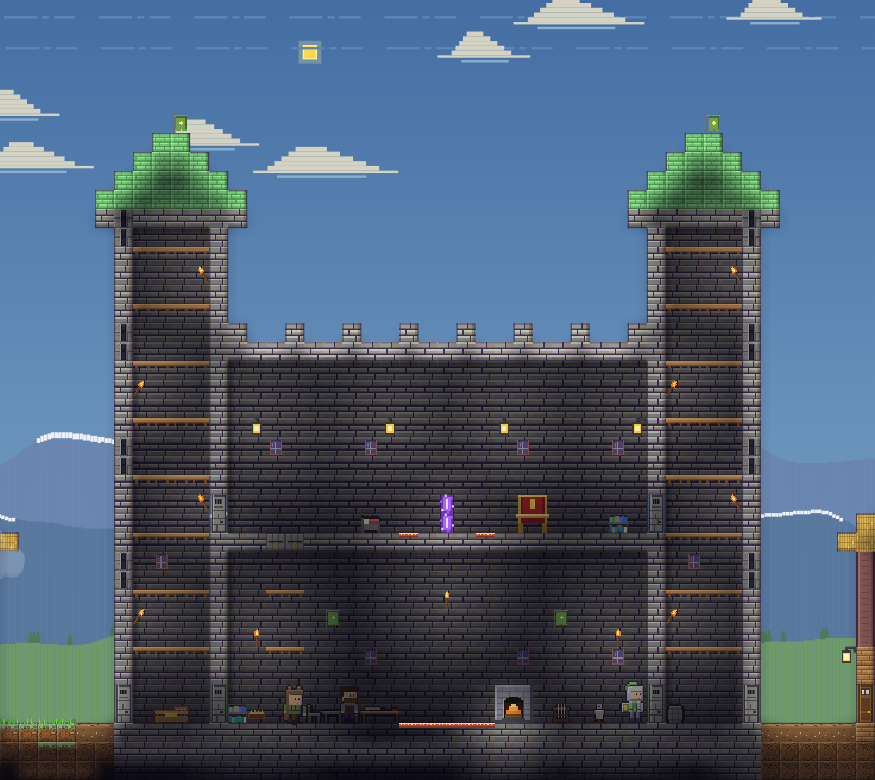
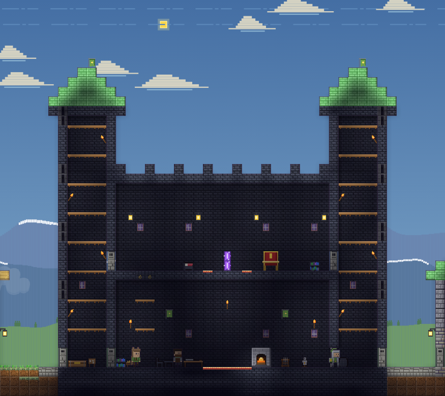
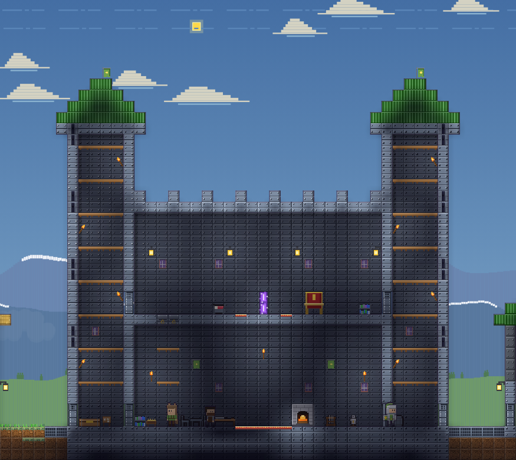

Your castle
Your castle is the heart of the village. It is rebuilt as the village grows: stone in a Hamlet, dark deep stone in a Town, iron in a City, with stone doors and then iron doors.
Upgrades
| Village size | How to grow | What it brings |
|---|---|---|
| Hamlet | Claim the abandoned castle | Room for 20 soldiers |
| Town |  Oak planks ×150, Oak planks ×150,  Stone brick ×80, Stone brick ×80,  Iron bar ×20 and 600 coins, at the Quartermaster or in the Buildings window Iron bar ×20 and 600 coins, at the Quartermaster or in the Buildings window | a new house, room for 30 soldiers, and a jeweler who sells runes and gems once the Archmage is beaten |
| City | Oak planks ×200, Stone brick ×200,  Gold bar ×20, Gold bar ×20,  Glass ×40 and 2000 coins, at the Quartermaster or in the Buildings window Glass ×40 and 2000 coins, at the Quartermaster or in the Buildings window | another house, room for 45 soldiers, the war engineer once you have taken an enemy castle, and warships and better deck cannons at the shipwright |
The castle at each size



Inside
Two towers with arrow slits two blocks high where soldiers stand; a great hall with a workbench, furnace, bookshelves, a table and a weapon rack; and an upper hall with the portal, a throne and beds for villagers who take shelter.
Fire and toughness
Stone, deep stone and iron cannot burn. Iron plate and iron doors need an iron pickaxe or better to break.